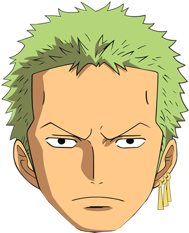
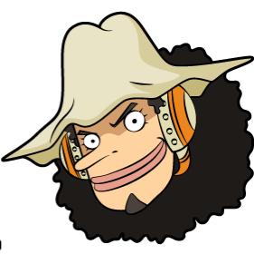
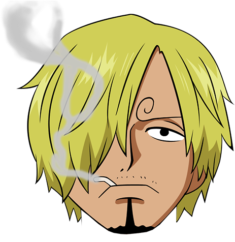

One Piece (ワンピース wanpīsu) adalah suatu anime dan manga tentang sekelompok bajak laut yang dipimpin oleh Monkey D. Luffy yang berkunjung mencari harta karun legendaris bernama One Piece. Luffy menjadi manusia karet yang mempunyai daya memanjangkan tubuhnya setelah secara tak sengaja memakan buah Gomu Gomu, salah satu dari buah iblis. Selama perjalanan Luffy banyak bertemu dengan teman baru dan musuh yang beragam. Pada Februari 2005, One Piece mencetak rekor di Jepang kepada penerbitan manga yang tercepat mencapai 100.000.000 eksemplar. Hingga masa ini One Piece adalah salah satu manga sangat laris sepanjang sejarah Jepang dengan penjualan bertambah dari 260 juta kopi. Selain itu One Piece juga memecahkan rekor kepada manga dengan cetakan pertama berkelebihan. One Piece banyak memperoleh pujian di selang para pembaca, terutama dalam hal gambar, karakter, humor, dan tuturan.
One Piece dibuat bentuk oleh Eiichiro Oda. Komiknya dimulai pada 1997 di Shonen Jump terbitan Shueisha dan hingga kini sedang terus berlanjut. Versi TV nya dimulai pada Oktober 1999. Di Indonesia manga ini diterbitkan Elex Media Komputindo dan hingga kini telah mencapai jilid ke 60 bertambah. Versi TV-nya, yang dibuat Toei, telah mencapai 500 episode di Jepang. Hingga masa ini, One Piece telah mengeluarkan 12 film, yang terakhir dirilis pada tanggal 15 Desember 2012. Di Indonesia sendiri pernah ditayangkan di RCTI dan Global TV.
Action Figure
Dalam serial live action di Netflix, tergambarkan 5 Main Character yang menjadi sorotan aksi dalam kisah bajak laut ini. Monkey D. Luffy, Roronoa Zoro, Nami, Usopp, dan Sanji. Siapa, dan apa saja kemampuan mereka?
Monkey D. Luffy (Straw Hat)
Tokoh Utama yang bercita-cita menjadi raja bajak laut setelah Shanks Si Rambut Merah singgah di pulau lahirnya, Fusha, beliau diberikan topi jerami olehnya sehingga kelak beliau harus mengembalikannya jika bertemu lagi. Topi jerami inilah yang belakang menjadi ciri khasnya. Pemakan buah iblis Gomu Gomu, bisa membuat seluruh anggota tubuhnya melar seperti karet, tidak tertembus peluru dan anti listrik, tetapi sangat lemah terhadap senjata tajam. Ciri khas bertarungnya adalah menyerang dengan memanjangkan tubuhnhya. Selalu memberikan kata "Gomu Gomu" sebelum jurusnya. Jurusnya banyakan menggunakan nama senjata dan artileri (contoh: Gomu Gomu no Pistol, Gomu Gomu no Bazooka, Gomu Gomu no Gatling, dll). Mempunyai "Gear 2", yaitu memompa tekanan darahnya hingga tubuhnya berasap (tapi organ tubuhnya tidak hancur sebab dia manusia karet) sehingga tubuhnya menjadi sangat cepat dan menambahkan kata "jet" sebelum serangannya (contoh: Gomu Gomu no Jet pistol). Dalam mode ini tinjunya menjadi sangat cepat hingga tidak terlihat(sekilas terlihat seperti menembak). Jika ditambahkan haki tinjunya berlaku menimbulkan efek ledakan. Mempunyai mode lain "Gear 3" yang mampu membesarkan anggota tubuhnya berlaku raksasa (tulangnya ikut membesar sebab terbuat dari karet) dalam mode ini serangan Luffy menjadi sangat kuat, tapi lambat dengan efek penghancuran yang luhur. Menambahkan kata "Gigant" sebelum serangannya (contoh: Gomu Gomu no Gigant Pistol). Jika ditambahkan haki tangannya menjadi hitam dan semakin keras. Selain itu, Luffy juga mempunyai jurus yang bisa memproduksi api (contoh: Gomu Gomu no Red Hawk). Salah satu dari 3 anggota terkuat golongan topi jerami. Nilai bounty 400.000.000 berry.
Roronoa Zoro (Pirates Hunter)

Anggota kru pertama Luffy. Bertarung dengan menggunakan 3 pedang. Ketiga pedangnya adalah pedang langka yang berkualitas sangat hebat. Nama ketiga pedangnya adalah Wadou Ichimonji (pedang milik teman dojo Zoro, Kuina yang sudah mati), Sandai Kitetsu (pedang terkutuk yang menurut legenda bisa membunuh pemakainya), dan Shusui (pedang hitam yang sangat kuat pemberian dari Ryuma, mantan lawannya). Salah satu dari 3 anggota terkuat golongan topi jerami. Nilai bounty 120.000.000 berry
Nami (A Thief)
Navigator handal yang mampu merasakan perubahan cuaca dengan tubuhnya, beliau juga merupakan pencuri walaupun setelah bergabung dengan Luffy kemampuan ini sedang sering digunakan. Bercita-cita menggambar peta dunia. Nami juga bisa bertarung menggunakan Perfect Clima Tact (Perfect Weather Staff) hasil pekerjaan Usopp. Bertarung dengan mengendalikan cuaca dan petir, serta menggunakan tongkat. Menurut Ussop termasuk salah satu 3 terlemah di golongan. Nilai bounty 16.000.000 berry.
Usopp

Penembak jitu di golongan bajak laut topi jerami. Bercita-cita menjadi penembak jitu pemberani di seluruh lautan dan akan berkunjung ke Pulau Elbaf. Ayahnya, Yasopp, adalah seorang penembak jitu di Golongan Bajak Laut Shanks. Sangat suka berbohong, dan menuturkan tuturan yang tinggi-tinggi. Bertarung dengan menggunakan tembakan ketapel dengan peluru unik dan jebakan-jebakan. Setelah 2 tahun latihan mampu mengendalikan pop green, tumbuhan yang bisa tumbuh dengan sifat menyerang dan cepat. Menurut dirinya sendiri, termasuk 3 orang terlemah di golongan. Walaupun termasuk 3 terlemah, dia merupakan orang yang berani bertarung melawan sang kapten Monkey D. Luffy dan membakar bendera Pemerintah Dunia. Nilai bounty 30.000.000 berry.
Sanji (Black Leg)

Koki di anggota Bajak Laut Topi Jerami dan merupakan rival Roronoa Zoro. Koki yang bercita-cita menemukan lautan legendaris di mana semua sumber bahan makanan berasal, All Blue. Beliau juga merupakan murid dari Zeff si Kaki Merah, koki handal dari Restoran Baratie yang dahulunya bajak laut. Sangat genit terhadap wanita. Sanji mempunyai prinsip yaitu tidak akan melukai wanita walaupun harus mati. Sanji menggunakan kedua kakinya kepada bertarung dan tidak pernah menggunakan tangannya sebab menurutnya,tangan adalah harta karun bagi seorang koki. Bertarung dengan teknik tendangan yang sangat kuat. Dia juga bisa menggunakan tenknik "Diable Jump" yang membuat kakinya mengeluarkan api. Teknik ini bisa memperkuat tendangannya dan memberikan efek terbakar pada musuhnya. Termasuk 3 anggota terkuat golongan topi jerami. Nilai bounty 77.000.000 berry.
About
Kota Bandung dikelilingi oleh pegunungan, sehingga bentuk morfologi wilayahnya bagaikan
sebuah mangkok raksasa,[9] secara geografis kota ini terletak di tengah-tengah provinsi
Jawa Barat, serta berada pada ketinggian ±768 m di atas permukaan laut, dengan titik
tertinggi di berada di sebelah utara dengan ketinggian 1.050 meter di atas permukaan
laut dan sebelah selatan merupakan kawasan rendah dengan ketinggian 675 meter di atas
permukaan laut.
Kota Bandung dialiri dua sungai utama, yaitu Sungai Cikapundung dan Sungai Citarum
beserta anak-anak sungainya yang pada umumnya mengalir ke arah selatan dan bertemu di
Sungai Citarum. Dengan kondisi yang demikian, Bandung selatan sangat rentan terhadap
masalah banjir terutama pada musim hujan.